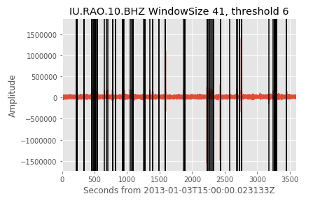

pycheron.metrics.spikesMetric module¶
-
spikesMetric(st, windowSize=41, threshold=10, selectivity=None, fixedThreshold=True, generateMasks=False, masksByTime=True, processes=4, logger=None, fortran=True, database=None)[source]¶ Determines number of spikes in a seismic stream.
Parameters: - st (obspy.core.stream.Stream) – (stream) - obspy stream object
- windowSize (int) – size of window to be used (e.g., window size to roll over.
- threshold (float) – initial threshold value for outlier detection.
- selectivity (float) – Range from 0-1 used in determining outliers, or None if fixedThreshold = TRUE
- fixedThreshold (bool) – (boolean) - if True, set the threshold = threshold and ignore selectivity. If False, then the threshold is set to the maximum value of the hampel/hampelFilter function output multiplied by the selectivity
- generateMasks (bool) – If True, a boolean mask array is created for spike values, if False mask returns None.
- masksByTime (bool) – Boolean to determine whether masks are generated by time. If True, masks will be generated with a start/end time, if false, they will be generated as boolean array.
- processes (int) – Number of processes to use for calculation.
- logger (pycheron.util.logger.Logger) – logger object
- fortran (bool) – Use Fortran libs or not. If libs will not compile or on a Windows Machine, set to False
- database (pycheron.db.sqllite_db.Database) – database object
Returns: list of dictionaries with following keys and types:
- snclq (str)
- spike_times (list)
- total_spike_count (int)
- non_adjacent_spikes (int)
- start_time (str)
- end_time (str)
- mask (numpy.ndarray or list)
- metric_name (str)
Return type: list
Parameter Notes
- threshold (float)
- Threshold level is similar to a sigma value for normally distributed data. Hampel filter values above 6.0 indicate a data value that is extremely unlikely to be part of a normal distribution (~1/500 million) and therefore likely to be an outlier. By choosing a relatively large value for threshold min one can make it less likely that we will generate false positives. False positives can include high frequency environmental noise.
- selectivity (float)
- The selectivity is a value between 0 and 1 and is used to generate an appropriate threshold for outlier detection based on the statistics of the incoming data. A lower value for selectivity will result in more outliers while a value closer to 1.0 will result in fewer.
Example
#test data data = 'test/test_data/spike_example_1hrseg.mseed' #reading in stream st = obspy.read(data) #setting parameters windowSize=41 threshold=6 selectivity=None fixedThreshold = True spikes = spikesMetric(st, windowSize, threshold, selectivity, fixedThreshold) print spikes >>> [{'total_spike_count': 117, 'non-adjacent_spikes': 51, 'masks': None, 'metric_name': 'spikesMetric', 'spike_times': ['2013-01-03T15:03:38.598133', '2013-01-03T15:03:38.623133', '2013-01-03T15:03:45.273133', '2013-01-03T15:03:45.298133', '2013-01-03T15:03:51.123133', '2013-01-03T15:03:51.148133', '2013-01-03T15:05:38.523133', '2013-01-03T15:05:38.548133', '2013-01-03T15:05:38.573133', '2013-01-03T15:05:38.598133', '2013-01-03T15:07:41.123133', '2013-01-03T15:07:41.148133', '2013-01-03T15:07:41.173133', '2013-01-03T15:07:41.198133', '2013-01-03T15:07:45.223133', '2013-01-03T15:08:09.048133', '2013-01-03T15:08:09.073133', '2013-01-03T15:08:31.373133', '2013-01-03T15:08:31.398133', '2013-01-03T15:08:31.423133', '2013-01-03T15:08:38.323133', '2013-01-03T15:09:00.998133', '2013-01-03T15:09:01.023133', '2013-01-03T15:09:01.048133', '2013-01-03T15:10:50.348133', '2013-01-03T15:11:22.448133', '2013-01-03T15:11:46.698133', '2013-01-03T15:12:54.573133', '2013-01-03T15:12:58.423133', '2013-01-03T15:12:58.448133', '2013-01-03T15:12:58.473133', '2013-01-03T15:12:58.498133', '2013-01-03T15:13:39.798133', '2013-01-03T15:13:39.823133', '2013-01-03T15:15:34.948133', '2013-01-03T15:15:34.973133', '2013-01-03T15:15:34.998133', '2013-01-03T15:15:40.148133', '2013-01-03T15:15:40.173133', '2013-01-03T15:15:56.348133', '2013-01-03T15:17:23.873133', '2013-01-03T15:17:54.773133', '2013-01-03T15:18:13.398133', '2013-01-03T15:18:13.423133', '2013-01-03T15:18:13.448133', '2013-01-03T15:18:13.473133', '2013-01-03T15:18:13.498133', '2013-01-03T15:20:50.623133', '2013-01-03T15:21:11.648133', '2013-01-03T15:21:11.673133', '2013-01-03T15:21:11.698133', '2013-01-03T15:21:11.723133', '2013-01-03T15:22:33.198133', '2013-01-03T15:23:09.323133', '2013-01-03T15:23:18.023133', '2013-01-03T15:23:18.048133', '2013-01-03T15:24:47.298133', '2013-01-03T15:24:47.323133', '2013-01-03T15:26:31.873133', '2013-01-03T15:26:31.898133', '2013-01-03T15:26:31.923133', '2013-01-03T15:26:31.948133', '2013-01-03T15:26:31.973133', '2013-01-03T15:31:11.073133', '2013-01-03T15:31:29.698133', '2013-01-03T15:31:29.723133', '2013-01-03T15:31:29.748133', '2013-01-03T15:31:29.773133', '2013-01-03T15:37:07.423133', '2013-01-03T15:37:07.448133', '2013-01-03T15:37:07.473133', '2013-01-03T15:37:07.498133', '2013-01-03T15:37:07.523133', '2013-01-03T15:37:07.548133', '2013-01-03T15:37:07.573133', '2013-01-03T15:37:07.598133', '2013-01-03T15:37:18.973133', '2013-01-03T15:37:45.498133', '2013-01-03T15:37:58.373133', '2013-01-03T15:38:22.623133', '2013-01-03T15:38:37.473133', '2013-01-03T15:38:51.573133', '2013-01-03T15:38:51.598133', '2013-01-03T15:38:51.623133', '2013-01-03T15:38:51.648133', '2013-01-03T15:40:32.023133', '2013-01-03T15:40:32.048133', '2013-01-03T15:40:32.073133', '2013-01-03T15:40:32.098133', '2013-01-03T15:42:54.048133', '2013-01-03T15:44:49.098133', '2013-01-03T15:44:58.923133', '2013-01-03T15:45:32.723133', '2013-01-03T15:45:32.748133', '2013-01-03T15:45:32.773133', '2013-01-03T15:45:32.798133', '2013-01-03T15:45:32.823133', '2013-01-03T15:46:02.973133', '2013-01-03T15:46:02.998133', '2013-01-03T15:46:03.023133', '2013-01-03T15:46:03.048133', '2013-01-03T15:46:03.073133', '2013-01-03T15:46:03.098133', '2013-01-03T15:52:56.948133', '2013-01-03T15:54:04.098133', '2013-01-03T15:54:21.848133', '2013-01-03T15:54:31.323133', '2013-01-03T15:54:31.348133', '2013-01-03T15:54:52.448133', '2013-01-03T15:54:52.473133', '2013-01-03T15:54:52.498133', '2013-01-03T15:54:52.523133', '2013-01-03T15:54:52.548133', '2013-01-03T15:54:56.173133', '2013-01-03T15:54:56.198133', '2013-01-03T15:57:33.973133', '2013-01-03T15:57:33.998133'], 'start_time': '2013-01-03T15:00:00.023133', 'snclq': u'IU.RAO.10.BHZ', 'end_time': '2013-01-03T16:00:03.723133'}]
Plotting
#Plot identified spikes on top of waveform tr = st[0] d = [] for i in spikes[0]['spike_times']: d.append(UTCDateTime(i)-tr.stats.starttime) plt.plot(tr.times(),tr.data) for i in d: plt.axvline(x=i,color='black') #plt.plot(d,tr.data[d],color='red',marker='o',markersize=4,linestyle='None') plt.xlabel('Seconds from %s' %str(tr.stats.starttime)) plt.xlim([min(tr.times()),max(tr.times())]) plt.ylabel('Amplitude') plt.title('%s WindowSize 41, threshold 6'%str(tr.id)) plt.show()